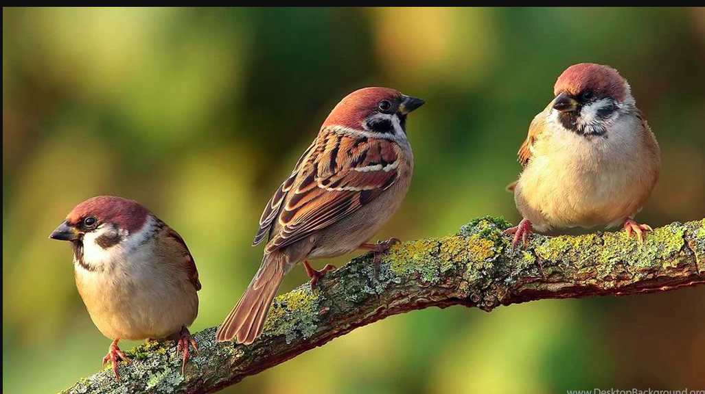

Endangered Species
Species that are on the verge of extension due to their decreasing population on account of environmental or predatory factors
are referred to an Endangered
House Sparrow
Birds, our chirpy feathered friends, who have amazed us by their aerodynamics and exotic colors, are under great threat.There are 9,934 apecien of birds that are existing in the world today,
out of which, a staggering 1,313(13%) are threatened under extinction. House Sparrow is one of them.
Sparrows, though tiny, are very sensitive and strongly immune birds, and their sudden disappearance as a sentinels
or as ecological indicators is a warning to humans about impending environmental harards.
Reasons for the dislocation of Sparrows
Non-availability of tiny insects as food due to the loss of vegetation
The excessive use of mosquito repellents
Concrete architecture with no nesting sites for sparrows
Air-conditioning which leaves no entry or exit points for feeding sparrow
nestings.